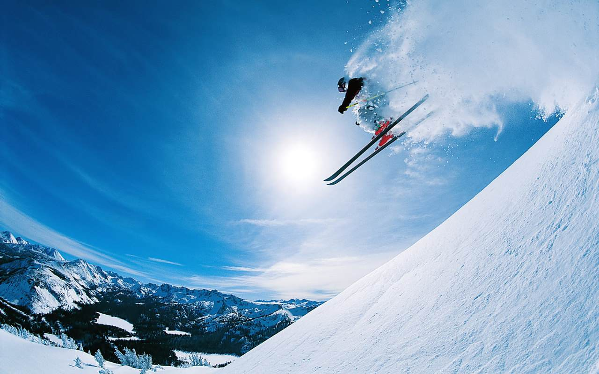

After some time in Finance and entrepreneurship, I decided to learn new skills and I hate programming
|  |
SkiLe ski est un moyen de locomotion, individuel de glisse pratiqué grâce à des patins longs (la taille de l'utilisateur) et étroits (la largeur du pied de l'utilisateur) également appelés skis, fixés aux pieds. |
TennisLe tennis est un sport de raquette qui oppose soit deux joueurs (on parle alors de jeu en simple) soit quatre joueurs qui forment deux équipes de deux (on parle alors de jeu en double). |